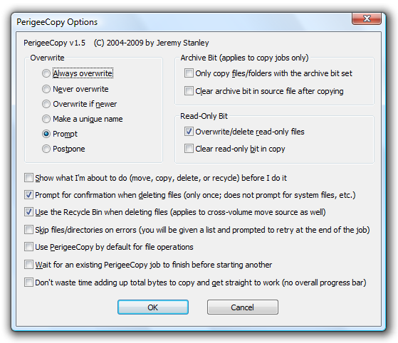

PerigeeCopy
by Jeremy Stanley
Have you ever carefully selected dozens of files and folders in Windows
Explorer and dragged them to a destination folder, only to have Windows
bail out on the whole procedure because one of the source files is
still in use? Have you ever wished there was a "No to all" option
on the overwrite prompt dialog? Or for the ability to
automatically overwrite files only if the source file is newer?
How about deleting files--say you want to clear everything out of the
temp folder except the two files that are in use. Explorer is
little help--it will bail as soon as it hits one of them, and refuse to
delete anything else. Or perhaps, like me, you've been annoyed by
incessant spurious "Are you sure?" prompts.
"Are you sure you
want to delete these files?" Yes.
"But wait! This
one's a program file. Are you sure you want to delete it?" Yes.
"But wait! This one's read-only! You
surely
don't want to delete it,
right?!"
I created PerigeeCopy specifically to address these annoyances with
Windows Explorer's built-in file operations.
PerigeeCopy is a configurable Win32 shell extension that lets you copy,
move, and delete files with the ease of Explorer's GUI, while at the
same time adding additional features and options, not the least of
which is the ability to resume after errors and retry any failed files
at the end of the job.
Download
PerigeeCopy is free software licensed under the terms of the GNU
GPL. It is distributed in the hope that it will be useful,
but it provides no warranty.
Contact me
with any feature requests or bug reports.
Binaries and source code are included in all downloads.
Change log
Invoking PerigeeCopy
- Copying and moving files
- Copy or cut files and folders to the clipboard normally, using
Explorer. Then right-click the destination folder, and select
"PerigeePaste" (instead of "Paste").
- Alternatively, check "Use PerigeeCopy by default" in the
options dialog, and PerigeeCopy will be invoked for all clipboard file
operations.
- Right-drag files and folders, and select "PerigeeCopy Here" or
"PerigeeMove Here" from the popup menu
- Alternatively, check "Use PerigeeCopy by default" in the
options dialog, and drag-drop files normally. As with Windows
Explorer, files will be moved when the source and destination folders
are on the same drive, and copied otherwise. Also, you can force
a copy by Ctrl+dragging or a move by Shift+dragging.
- Deleting files
- Select files and folders in Explorer, then right-click and
select "PerigeeDelete".
- Configuring PerigeeCopy
- Select "Configure
PerigeeCopy" from the Start menu. You'll see this dialog:

PerigeeCopy Options
- Overwrite - Specify when existing files should be
overwritten in a copy operation. If "Prompt" is selected, you
will be given information about the existing and new files, and asked
whether the destination file should be overwritten (with an option to
apply your choice to all files in the job). If "Postpone" is selected,
files that already exist will be skipped until the end of the job,
and you will be given the choice to overwrite once all other files
have been copied.
- Archive Bit - Allows you to copy
only files and folders with the archive attribute set, and/or to clear
the source files' archive attributes after copying. These
features can be used in incremental backups.
- Read-Only Bit
- Overwrite/delete read-only
files - Clear the read-only, hidden, and system attributes of
files before attempting to overwrite or delete them. If this
option is not checked, you may get an "access denied" error when trying
to overwrite or delete such files.
- Clear read-only bit in copy
- Clears the read-only attribute of the destination files after
copying. Useful for copying from CD-ROMs.
- Show what I'm about to do -
For all operations, display a confirmation dialog listing the operation
about to be performed and the files involved.
- Prompt for confirmation when
deleting files - Display a confirmation dialog listing the
names of the selected files and folders before deleting. This
will be the only prompt you see; there will be no additional warnings
about deleting program files, system files, and so forth.
- Use the Recycle Bin when
deleting files - Move
files to the recycle bin instead of deleting them. This applies
both
to delete operations and to the source file(s) in a cross-volume move
operation. Note that, regardless of this setting, files on
network
shares never go to the recycle bin.
- Skip files/directories on errors
- Do not prompt when a file could not be copied, moved, or
deleted; simply skip the file and proceed with the job.
- Note: Regardless of
whether this option is checked, you will be shown a list of all failed
files when the job completes, and you'll be given the option to retry
them then.
- Use PerigeeCopy by default for
file operations - Invoke PerigeeCopy
instead of Explorer when dragging files and folders or pasting files.
- Wait for previous job to finish
before starting another - If you start a job while another one
is still in progress, the new job will pause until the previous one
finishes. This improves throughput when both jobs use the same disk.
- Don't waste time adding up total
bytes to copy and get straight to work - Just begin the
operation immediately, without computing the size of the
operation. The job may get done a little faster this way, but you
won't get a progress bar.
Contact
Please provide feedback
here.